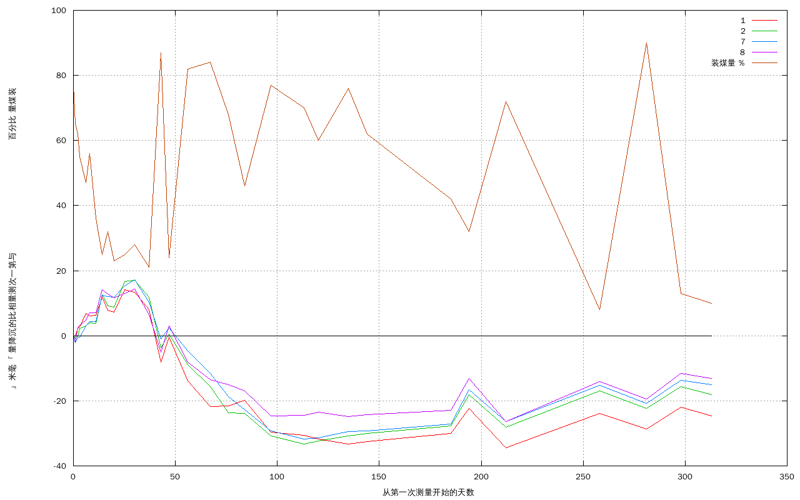

二号末煤仓高程表
| 时间 | 各点高程 |
| | 1 | 2 | 7 | 8
|
| 2009.12.19 | 1394.074 | 1394.067 | 1393.964 | 1394.038 |
| 2009.12.20 | 1394.074 | 1394.0662 | 1393.9619 | 1394.0363 |
| 2009.12.21 | 1394.0763 | 1394.0668 | 1393.9633 | 1394.0405 |
| 2009.12.22 | 1394.0766 | 1394.0693 | 1393.9635 | 1394.0413 |
| 2009.12.25 | 1394.0808 | 1394.0701 | 1393.9671 | 1394.0428 |
| 2009.12.27 | 1394.08 | 1394.071 | 1393.9683 | 1394.045 |
| 2009.12.30 | 1394.0802 | 1394.0707 | 1393.9683 | 1394.045 |
| 2010.01.02 | 1394.0859 | 1394.0796 | 1393.9765 | 1394.0521 |
| 2010.01.05 | 1394.0819 | 1394.0761 | 1393.9761 | 1394.0508 |
| 2010.01.08 | 1394.08125 | 1394.0757 | 1393.97585 | 1394.0497 |
| 2010.01.13 | 1394.0881 | 1394.0836 | 1393.9793 | 1394.051 |
| 2010.01.18 | 1394.0873 | 1394.0841 | 1393.9813 | 1394.0523 |
| 2010.01.25 | 1394.0821 | 1394.0788 | 1393.9743 | 1394.0445 |
| 2010.01.31 | 1394.0658 | 1394.0633 | 1393.963 | 1394.033 |
| 2010.02.04 | 1394.0736 | 1394.0676 | 1393.9664 | 1394.041 |
| 2010.02.13 | 1394.0602 | 1394.0582 | 1393.9594 | 1394.0298 |
| 2010.02.24 | 1394.0522 | 1394.0514 | 1393.9524 | 1394.0245 |
| 2010.03.05 | 1394.0525 | 1394.0433 | 1393.9453 | 1394.023 |
| 2010.03.13 | 1394.0542 | 1394.0432 | 1393.9412 | 1394.021 |
| 2010.03.26 | 1394.0444 | 1394.0362 | 1393.9347 | 1394.0133 |
| 2010.04.11 | 1394.0435 | 1394.0338 | 1393.9323 | 1394.0135 |
| 2010.04.18 | 1394.0422 | 1394.0347 | 1393.9327 | 1394.0145 |
| 2010.05.03 | 1394.0407 | 1394.0363 | 1393.9345 | 1394.0132 |
| 2010.05.12 | 1394.0414 | 1394.0369 | 1393.9347 | 1394.0138 |
| 2010.06.22 | 1394.044 | 1394.0393 | 1393.9368 | 1394.015 |
| 2010.07.01 | 1394.0517 | 1394.0488 | 1393.9475 | 1394.0248 |
| 2010.07.19 | 1394.0396 | 1394.0389 | 1393.9376 | 1394.0117 |
| 2010.09.03 | 1394.0502 | 1394.0500 | 1393.9488 | 1394.0239 |
| 2010.09.26 | 1394.0454 | 1394.0447 | 1393.9432 | 1394.0186 |
| 2010.10.13 | 1394.0521 | 1394.0514 | 1393.9504 | 1394.0264 |
| 2010.10.28
| 1394.0493
| 1394.0488
| 1393.9489
| 1394.0248
|
二号末煤仓沉降表
| 时间 | 各点沉降量 |
| | 1 | 2 | 7 | 8
|
| 2009.12.19 | 0.0 | 0.0 | 0.0 | 0.0 |
| 2009.12.20 | 0.0 | 0.0008 | 0.0021 | 0.0017 |
| 2009.12.21 | -0.0023 | 0.0002 | 0.0007 | -0.0025 |
| 2009.12.22 | -0.0026 | -0.0023 | 0.0005 | -0.0033 |
| 2009.12.25 | -0.0068 | -0.0031 | -0.0031 | -0.0048 |
| 2009.12.27 | -0.006 | -0.004 | -0.0043 | -0.007 |
| 2009.12.30 | -0.0062 | -0.0037 | -0.0043 | -0.007 |
| 2010.01.02 | -0.0119 | -0.0126 | -0.0125 | -0.0141 |
| 2010.01.05 | -0.0079 | -0.0091 | -0.0121 | -0.0128 |
| 2010.01.08 | -0.0072 | -0.0087 | -0.0119 | -0.0117 |
| 2010.01.13 | -0.0141 | -0.0166 | -0.0153 | -0.013 |
| 2010.01.18 | -0.0133 | -0.0171 | -0.0173 | -0.0143 |
| 2010.01.25 | -0.0081 | -0.0118 | -0.0103 | -0.0065 |
| 2010.01.31 | 0.0082 | 0.0037 | 0.001 | 0.005 |
| 2010.02.04 | 0.0004 | -0.0006 | -0.0024 | -0.003 |
| 2010.02.13 | 0.0138 | 0.0088 | 0.0046 | 0.0082 |
| 2010.02.24 | 0.0218 | 0.0156 | 0.0116 | 0.0135 |
| 2010.03.05 | 0.0215 | 0.0237 | 0.0187 | 0.015 |
| 2010.03.13 | 0.0198 | 0.0238 | 0.0228 | 0.017 |
| 2010.03.26 | 0.0296 | 0.0308 | 0.0293 | 0.0247 |
| 2010.04.11 | 0.0305 | 0.0332 | 0.0317 | 0.0245 |
| 2010.04.18 | 0.0318 | 0.0323 | 0.0313 | 0.0235 |
| 2010.05.03 | 0.0333 | 0.0307 | 0.0295 | 0.0248 |
| 2010.05.12 | 0.0326 | 0.0301 | 0.0293 | 0.0242 |
| 2010.06.22 | 0.03 | 0.0277 | 0.0272 | 0.023 |
| 2010.07.01 | 0.0223 | 0.0182 | 0.0165 | 0.0132 |
| 2010.07.19 | 0.0344 | 0.0281 | 0.0264 | 0.0263 |
| 2010.09.03 | 0.0238 | 0.017 | 0.0152 | 0.0141 |
| 2010.09.26 | 0.0286 | 0.0223 | 0.0208 | 0.0194 |
| 2010.10.13 | 0.0219 | 0.0156 | 0.0136 | 0.0116 |
| 2010.10.28
| 0.0247 | 0.0182 | 0.0151 | 0.0132 |
二号末煤仓沉降图
